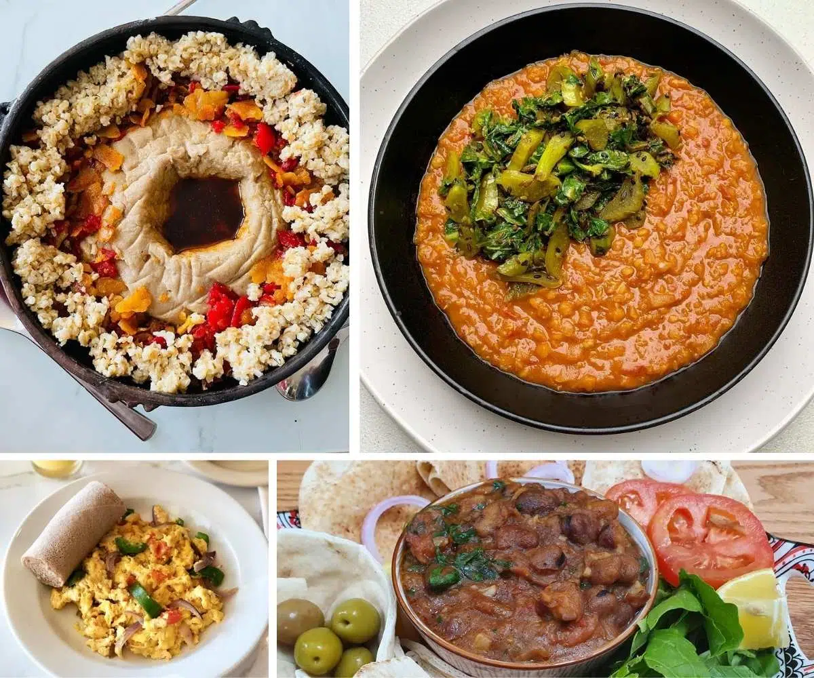
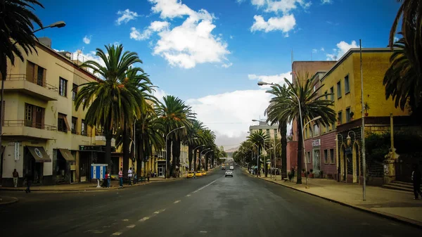

Eritrean culture diversity

Eritrean Foods
Eritrean Foods

Welcome to Eritrea, where ancient wonders unfold and natural beauty mesmerizes. Explore our hidden gems, from the enchanting Dahlak Islands to the ancient city of Adulis, where history whispers through ancient ruins. Discover a land where time stands still, and let Eritrea's captivating landscapes and warm hospitality create memories that will last a lifetime.
"Discover the captivating essence of Eritrea, where ancient history dances with breathtaking landscapes, and warm smiles invite you to embrace a vibrant culture. Embark on an unforgettable journey, where the Red Sea's turquoise embrace, the charm of Asmara's art deco streets, and the echoes of a resilient past intertwine to create a tapestry of wonder. Let Eritrea be the canvas upon which your wanderlust paints its most vibrant memories."
for more infomation please sign up